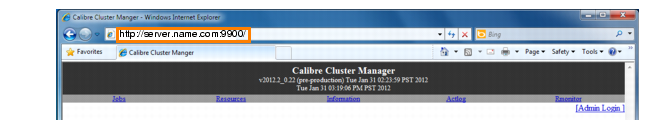
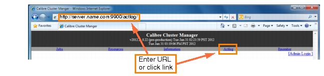
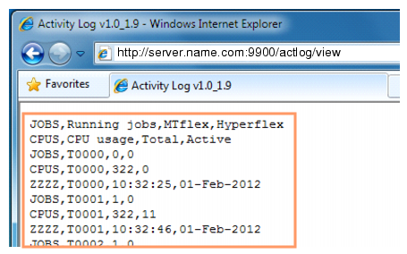

CalCM Application Development Overview
When you invoke CalCM, the application reads the configuration file which includes the following APPLICATION TCL statement, used to initialize the calcm_actlog_app.tcl application:
APPLICATION TCL $CALCM_HOME/calcm_actlog_app.tcl FILE [
LOGPATH = My_PATH
USERNAME = Me
JOBQUEUE = This_directory
]The calcm_actlog_app.tcl file includes “proc” statements that perform the following functions:
Application Entry Point — The “proc nemo::application” statement defines the entry point for CalCM applications.
Application Initialization — The “proc configureApp” statement parses the application section of the configuration file.
Status Update — The “proc updateLog” statement creates a snapshot of the cluster state and updates the information in the log file. A snapshot is a collection of consistent information about the state of a cluster at a specific moment in time.
Message Processing — The “proc processMessage” statement processes information received by CalCM and displays the information in a web browser.
Application Entry Point
Calibre Cluster Manager uses “events” to notify hosted applications about conditions that occur during the execution. Events are processed by application-defined callback routines that implement the desired behavior.
Each event that occurs during CalCM execution is broadcast to all applications, which can either react to the event or ignore it. In general, applications should ignore an event if they cannot “understand” its meaning; this provides for backward compatibility. The order in which a particular event is delivered to its recipients is unspecified and may vary even from one event instance to another.
The following types of events exist:
Configuration — This event allows applications to set various options by interpreting respective sections of the CalCM configuration file. It occurs once when the application is loaded.
Startup — This event occurs once during CalCM startup after all applications have been configured and indicates that the host has initialized successfully and applications can begin to perform their function.
Shutdown — This event occurs once during CalCM shutdown before the application is unloaded from memory. It allows applications to perform a graceful cleanup.
Status Update — This is a periodic event that occurs every time information about the global cluster state is updated. It allows applications to detect important changes in cluster state and react accordingly.
Message — This event occurs when CalCM receives a message from an external source. It allows applications to implement remote communication and control via an application-defined text-based protocol.
The following Tcl application implements a reaction to events by processing a series of subcommands. The nemo::application procedure is the callback interface for event handling. Comments are used to describe the event reaction.
proc nemo::application {subCmd args} {
switch $subCmd {
// Parse the configuration section and read path to log file
configure { configureApp [lindex $args 0] }
// Return the application name "Activity Log".
name { return "Activity Log" }
// Open and initialize the log file.
attach { openLogFile }
// Close the log file.
detach { closeLogFile }
// Write a new entry to the log file.
update_status { updateLog [lindex $args 0] }
// Handle HTTP request from a web browser and reply with a HTML page
// containing the current log file size and a link to its contents.
process_message { processMessage [lindex $args 0] }
}
} Application Initialization
The configure subcommand allows an application to initialize itself by parsing the corresponding section of a configuration file, which is passed as an argument. The syntax of the configuration section is defined by the application. The following CalCM configuration file configures the “Activity Log” and associated applications:
APPLICATION TCL $CALBR_APPS/calcm/calcm_actlog_app.tcl FILE [
LOGPATH=/home/calcm/calcmlog.txt
]
The “name” subcommand is used by CalCM to obtain the human-readable name of the application. The returned string is used for display and identification purposes only and does not necessarily have to be unique, although the use of clearly distinguishing application names is certainly encouraged. If the application does not process the name event (in other words, if the result of the query is empty), the path to the application script is used by CalCM.
The attach and detach subcommands represent the “Startup” and “Shutdown” events. The difference between configure and attach is that the latter is only invoked after CalCM has successfully started and is always complemented by detach.
proc configureApp {configText} {
global logFilePath
foreach line [split $configText "\n"] {
regexp {^\s*LOGPATH\s*=\s*(\S+)} $line -> logFilePath
}
}
proc openLogFile {} {
global logFilePath logFileId
set logFileId [open $logFilePath "w"]
puts $logFileId "JOBS,Running jobs,MTflex,Hyperscaling"
puts $logFileId "CPUS,CPU usage,Total,Active"
}
proc closeLogFile {} {
global logFileId
close $logFileId
} Status Update
The cluster state is represented in the form of a “snapshot,” which is a collection of consistent information about the cluster state at a certain moment in time. A cluster snapshot contains objects of different types that form a hierarchy. The most general type is named “Object,” where “Job,” “Process,” and “Node” are three different kinds of objects. There is a specific type of “Process” named “Calibre”, which, in turn, has two different types named “Calibre Master” (primary process ) and “Calibre Remote” (remote process). There are additional object types that represent miscellaneous system information, such as “Interface” (network interface) and “Filesystem” (file system). Refer to the “CalCM Nemo API Reference Dictionary” for more information.
The taxonomy of a snapshot embodies similarities between different types, or classes, of objects that can be present in a cluster snapshot. These similarities are reflected in the commands of the Nemo API where options for some commands are also available in commands that correspond to specific object types. For example, the options available in the nemo::object command can also be found in nemo::job and nemo::process. For example, the following two lines of code are equivalent:
set jobOwner [nemo::job attr $jobObj "owner"]
set jobOwner [nemo::object attr $jobObj "owner"] All commands in the Nemo API follow this pattern. For instance, options available in nemo::process are also available in nemo::master, nemo::remote, and nemo::calibre. The choice of which command name to use in each particular situation obviously depends on whether a concrete object type is known, but factors like readability and clarity of code must also be taken into account.
A reference to the most current snapshot is passed as an argument to the update status subcommand. The snapshot is guaranteed to remain unchanged and consistent as long as at least one reference to it exists in one of the running applications. The only allowed usage of the snapshot reference is as an argument to the nemo::snapshot procedure.
Each cluster snapshot contains a list of active Calibre jobs (nemo::snapshot jobs) and available nodes (nemo::snapshot nodes). Each Calibre job has a one-to-many association with Calibre primary processes (nemo::job masters) that represent Hyperscaling HDBs (in case of Calibre MTflex, there is a single HDB0). Each Calibre primary has a one-to-many association with Calibre remote processes connected to the primary (nemo::master remotes). On the other hand, each cluster node has a one-to-many association with processes that are currently running on that node (nemo::node processes).
proc updateLog {snapshotObj} {
global updateCount logFileId
set t [nemo::snapshot timestamp $snapshotObj]
set entryId [format "T%04d" $updateCount]
set entryTime [clock format $t -format {%T,%d-%b-%Y} -gmt 0]
set mtflexJobs 0
set hyperscalingJobs 0
set totalCpus 0
set activeCpus 0
foreach jobObj [nemo::snapshot jobs $snapshotObj] {
set n [nemo::job number_of_masters $jobObj]
if {$n == 1} { incr mtflexJobs }
if {$n > 1} { incr hyperscalingJobs }
}
foreach nodeObj [nemo::snapshot nodes $snapshotObj] {
incr totalCpus [nemo::node cpu_count $nodeObj]
incr activeCpus [nemo::node number_of_processes $nodeObj
-type calibre]
}
puts $logFileId "JOBS,$entryId,$mtflexJobs,$hyperscalingJobs"
puts $logFileId "CPUS,$entryId,$totalCpus,$activeCpus"
puts $logFileId "ZZZZ,$entryId,$entryTime"
flush $logFileId
incr updateCount
} Message Processing
Upon startup, CalCM creates a TCP/IP server (default port number is 9900) that can be used by external clients to connect to the Cluster Manager and exchange information with running applications using an application-defined text-based communication protocol. Currently, CalCM imposes only one common convention on protocols used by applications: a double “Carriage Return” sequence (“\n\n”) must be used as the message terminator. This is compatible with HTTP protocol used by web browsers, which allows CalCM applications to implement web-based interfaces.
Messages received by CalCM are delivered to applications via a process message subcommand of the nemo::application callback interface. A reference to the object representing the received message is passed as the subcommand’s argument and can be used with nemo::message to retrieve message attributes.
proc processMessage {messageObj} {
global logFilePath
set messageText [nemo::message text $messageObj]
if {[regexp {^GET\s+/actlog/?(\S*)\s+HTTP} $messageText -> requestDir]} {
set replyChannelId [nemo::message channel $messageObj]
puts $replyChannelId "<html><title>[nemo::application
name]</title><body>"
switch $requestDir {
"“ {
set fileSize [file size $logFilePath]
puts $replyChannelId "Current log file size: $fileSize<br>"
puts $replyChannelId "<a href=\"/actlog/view\">View log
file</a>"
}
"view" {
puts $replyChannelId "<pre>"
set f [open $logFilePath "r"]
while {[gets $f line] != -1} {
puts $replyChannelId $line
}
close $f
puts $replyChannelId "</pre>"
}
default {
puts $replyChannelId "<font size=\"+3\"
color=\"red\">404</font>"
}
}
puts $replyChannelId "</body></html>"
}
} The following steps describe the message processing of the CalCM Activity Log application.
The CalCM Application is invoked in a browser window by entering the server name and port number. For example:
The solicit command is invoked only once when the CalCM Activity Log application is initialized:
# nemo::application -- # # Entry point of CalCM application. # proc nemo::application {subCmd args} { switch $subCmd { configure { configureApp [lindex $args 0] } name { set v "\$Revision: 1.9 $" regexp {.Revision: ([0-9.]+) } $v x subversion return "Activity Log v1.0_$subversion" } attach { openLogFile } detach { closeLogFile } update_status { updateLog [lindex $args 0] } solicit { return {^GET\s+/actlog/?.*} } process_message { processMessage [lindex $args 0] } } }Upon clicking the Actlog link or entering the URL, the web browser sends the “GET /actlog” message to the CalCM daemon.
The CalCM daemon then calls the process_message command.
The CalCM Activity Log application processes the message.
The CalCM Activity Log application sends the results to the browser.
The browser window is updated to display the results.

Clicking the View log file link or entering the URL sends the “GET /actlog/view” message to the CalCM daemon:
--- APP UPDATE (Tue Jan 31 15:52:12 2012) --- Received connection request from sj184dy165:53774 sj184dy165:53774: GET /actlog/view HTTP/1.1 Connection with sj184dy165:53774 closedThe solicited message is then processed by process_message.
The message is parsed and processed based on a URL with the “/actlog/view” string:
if {[regexp {^GET\s+/actlog/?(\S*)\s+HTTP} $messageText -> requestDir]} { set replyChannelId [nemo::message channel $messageObj] puts $replyChannelId "<html><title>[nemo::application name] </title><body>" switch $requestDir { ""{ set fileSize [file size $logFilePath] puts $replyChannelId "Current log file size: $fileSize<br>" puts $replyChannelId "<a href=\"/actlog/view\">View log file</a>" } "view" { puts $replyChannelId "<pre>" set f [open $logFilePath "r"] while {[gets $f line] != -1} { puts $replyChannelId $line }The results are sent to the browser and the browser is updated.
